← archive records 127 records Records I keep coming back to
Life is but a memory, happened long ago
Nick Drake, Fruit Tree
On my mind lately featured · 15 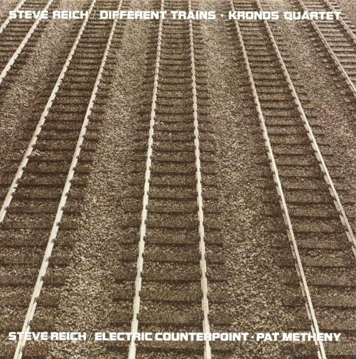
Different Trains / Electric Counterpoint Steve Reich 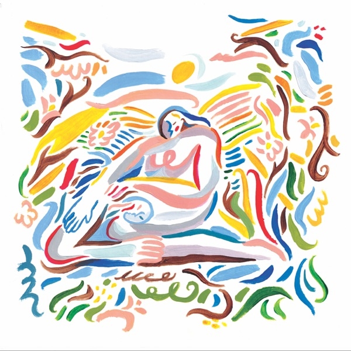
open this wall berlioz 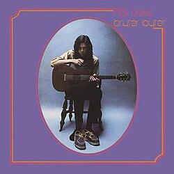
Bryter Layter Nick Drake 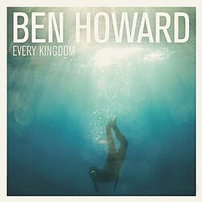
Every Kingdom Ben Howard 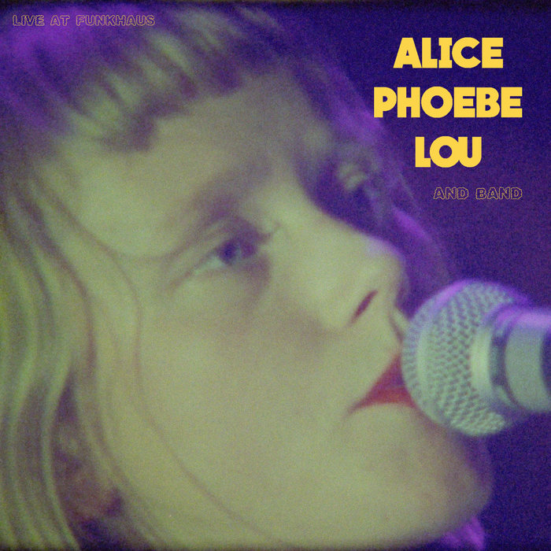
Live at Funkhaus Alice Phoebe Lou abysskiss / b-sides Adrianne Lenker 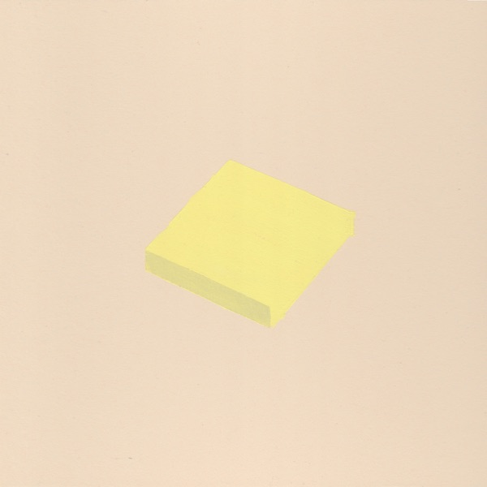
Playing Piano for Dad h. hunt 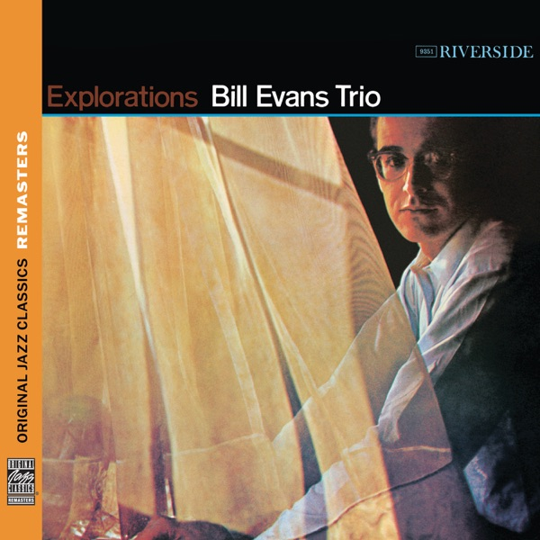
Explorations Bill Evans Trio 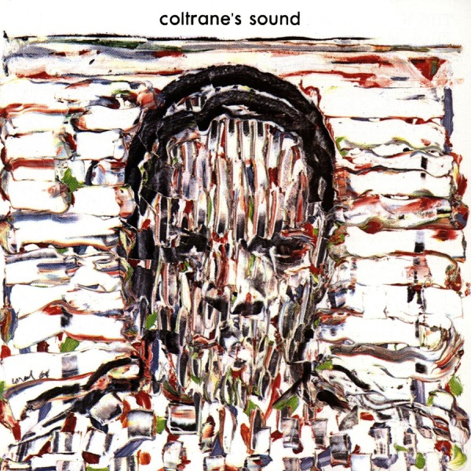
Coltrane's Sound John Coltrane 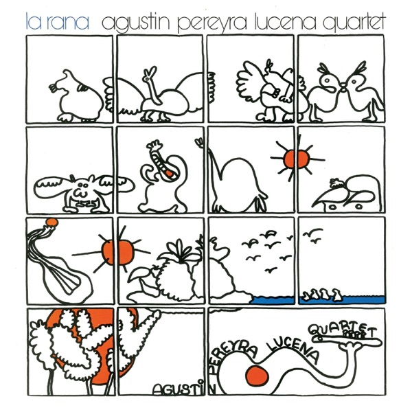
La Rana Agustín Pereyra Lucena 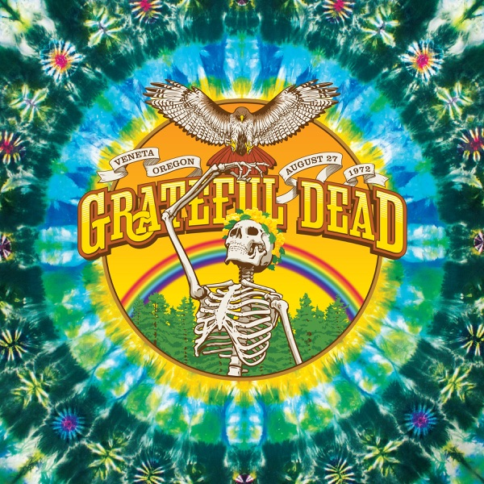
Veneta, OR 8/27/72 Grateful Dead 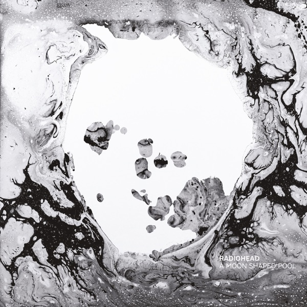
A Moon Shaped Pool Radiohead 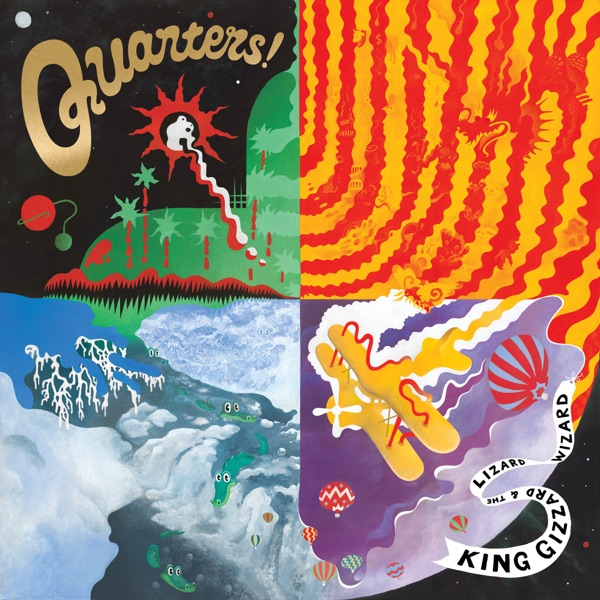
Quarters! King Gizzard & The Lizard Wizard 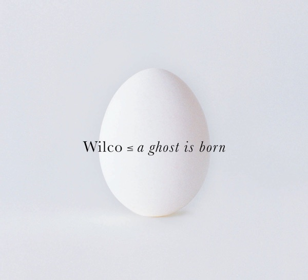
A Ghost Is Born Wilco 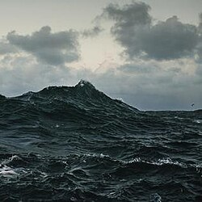
Repave Volcano Choir Different Trains / Electric Counterpoint Steve Reich open this wall berlioz Bryter Layter Nick Drake Every Kingdom Ben Howard Live at Funkhaus Alice Phoebe Lou abysskiss / b-sides Adrianne Lenker Playing Piano for Dad h. hunt Explorations Bill Evans Trio Coltrane's Sound John Coltrane La Rana Agustín Pereyra Lucena Veneta, OR 8/27/72 Grateful Dead A Moon Shaped Pool Radiohead Quarters! King Gizzard & The Lizard Wizard A Ghost Is Born Wilco Repave Volcano Choir The collection No matches. Try another title or genre.
Electronic, ambient & classical 12 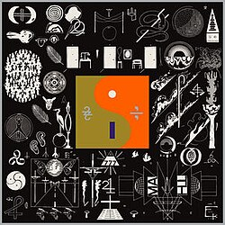
22, A Million Bon Iver
2016
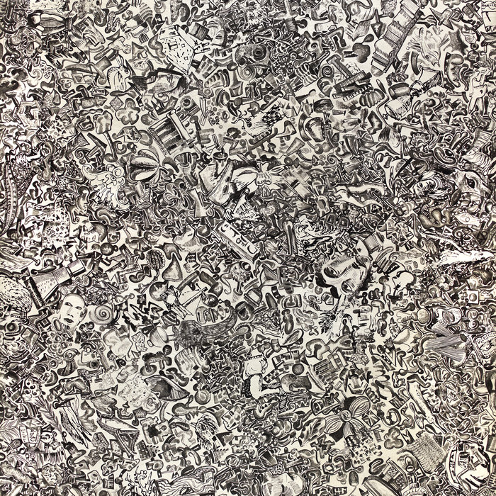
Ambient 1 STRFKR
2017
Debussy / Ravel: String Quartets Emerson String Quartet
~1980s
Different Trains / Electric Counterpoint Steve Reich
1989
Discovery Daft Punk
2001
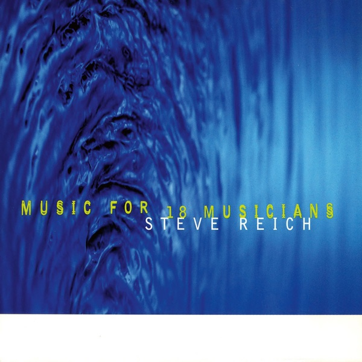
Music for 18 Musicians Steve Reich
1978
open this wall berlioz
~2021
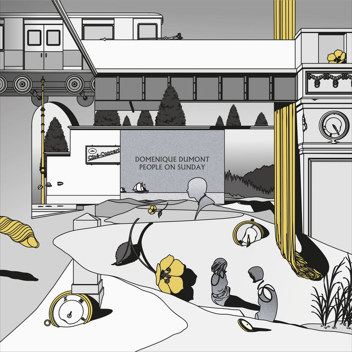
People On Sunday Domenique Dumont
2013
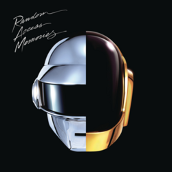
Random Access Memories Daft Punk
2013
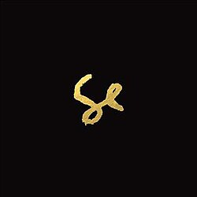
Sylvan Esso Sylvan Esso
2014
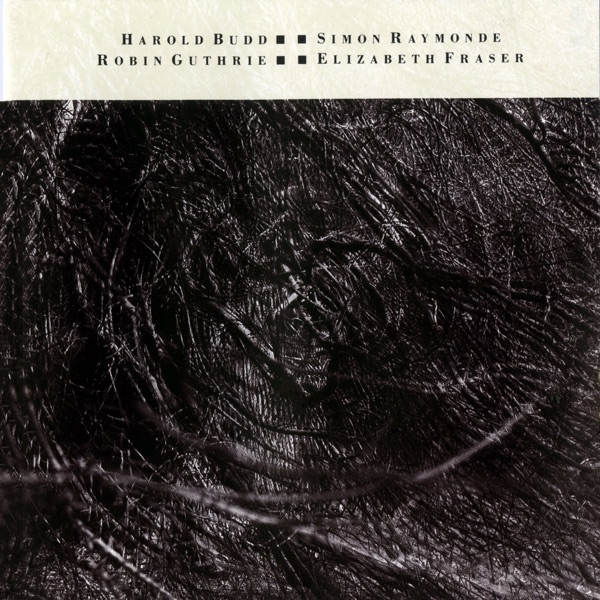
The Moon and the Melodies Cocteau Twins & Harold Budd
1986
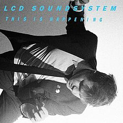
This Is Happening LCD Soundsystem
2010
Folk & songwriters 22 abysskiss / b-sides Adrianne Lenker
2018
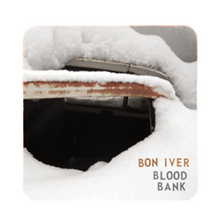
Blood Bank Bon Iver
2009, EP
Bryter Layter Nick Drake
1971
Capacity Big Thief
2017
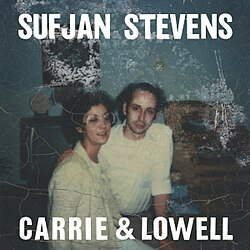
Carrie & Lowell Sufjan Stevens
2015
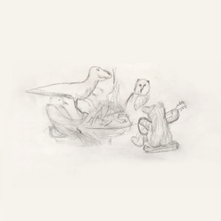
Dragon New Warm Mountain I Believe In You Big Thief
2022
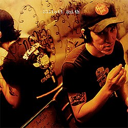
Either/Or Elliott Smith
1997
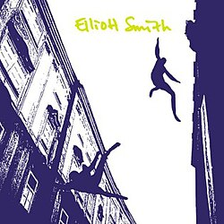
Elliott Smith Elliott Smith
1995
Every Kingdom Ben Howard
2011
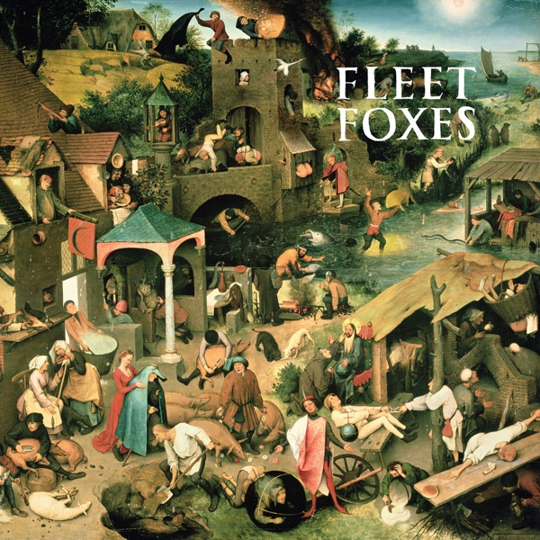
Fleet Foxes Fleet Foxes
2008
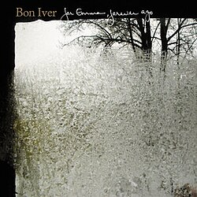
For Emma, Forever Ago Bon Iver
2007/2008
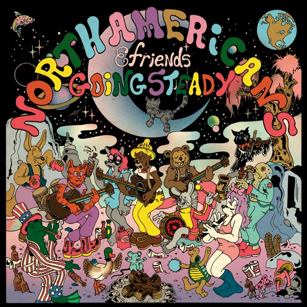
Going Steady North Americans
~2022
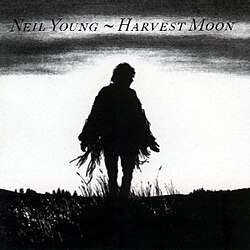
Harvest Moon Neil Young
1992
Hozier Hozier
2014
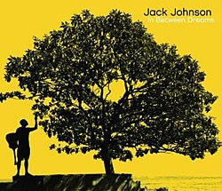
In Between Dreams Jack Johnson
2005
Live at Funkhaus Alice Phoebe Lou
2020
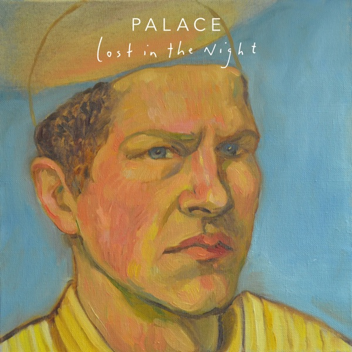
Lost in the Night Palace
2018
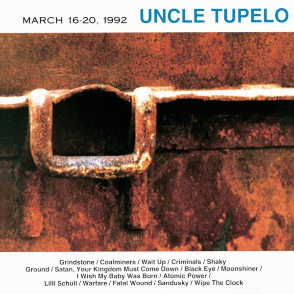
March 16-20, 1992 Uncle Tupelo
1992
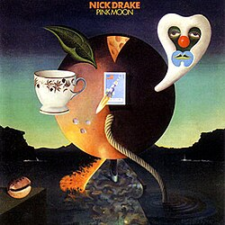
Pink Moon Nick Drake
1972
Repave Volcano Choir
2013
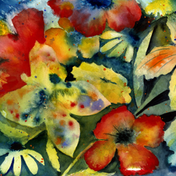
songs Adrianne Lenker
2020
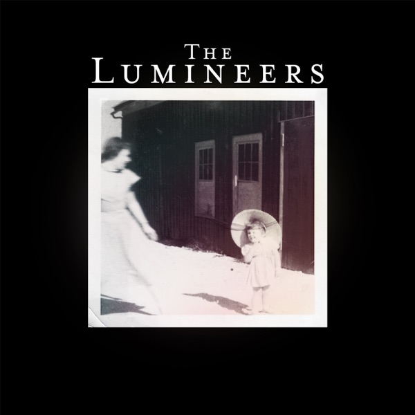
The Lumineers The Lumineers
2012
Hip-hop 10 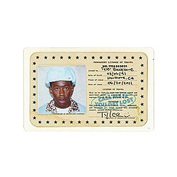
CALL ME IF YOU GET LOST Tyler, The Creator
2021
CHROMAKOPIA Tyler, The Creator
2024
Circles Mac Miller
2020
DAMN. Kendrick Lamar
2017
Flower Boy Tyler, The Creator
2017
good kid, m.A.A.d city Kendrick Lamar
2012
IGOR Tyler, The Creator
2019
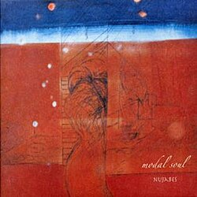
Modal Soul Nujabes
2005
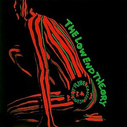
The Low End Theory A Tribe Called Quest
1991
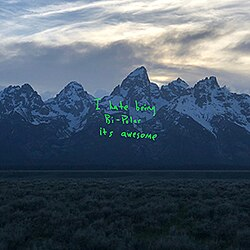
ye Kanye West
2018
Indie & dream pop 15 2 Mac DeMarco
2012
Being So Normal Peach Pit
2017
Bismillah Peter Cat Recording Co.
2015
Charm Clairo
2024
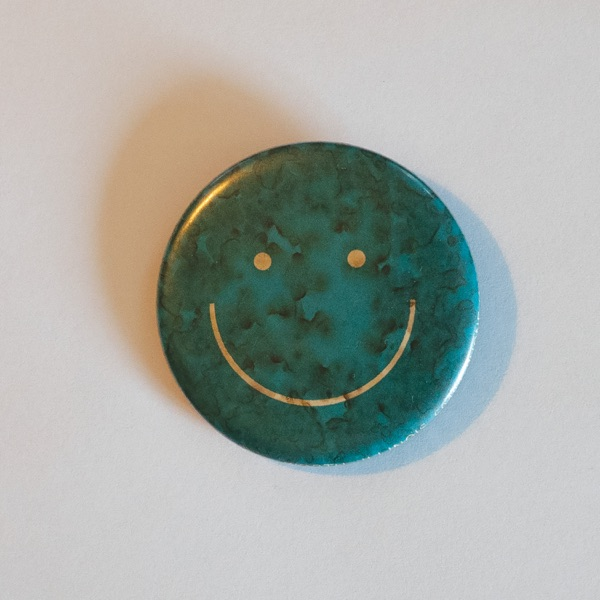
Here Comes The Cowboy Mac DeMarco
2019
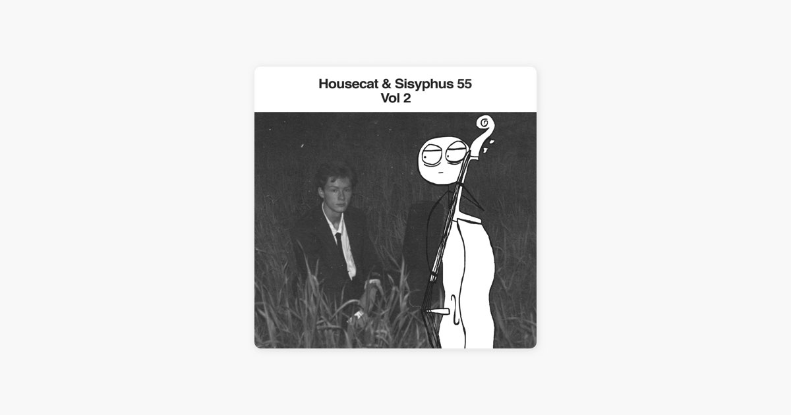
Housecat & Sisyphus 55, Vol. 2 Housecat
year unclear
LONG SEASON Fishmans
1996
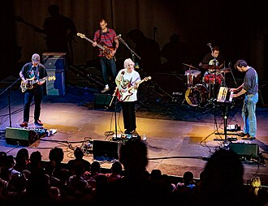
Oncle Jazz Men I Trust
2019
Playing Piano for Dad h. hunt
year unclear
Sling Clairo
2021
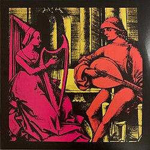
Summer's Over Jordana
~2020
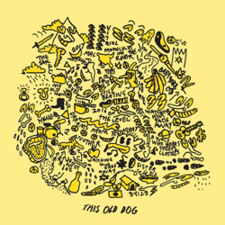
This Old Dog Mac DeMarco
2017
Trick Alex G
2012
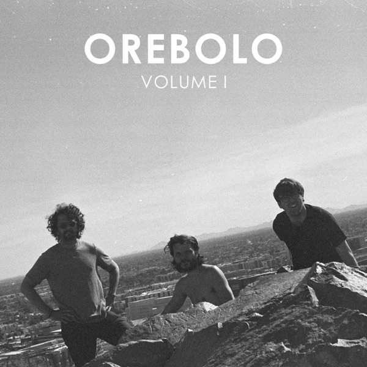
Volume I Orebolo
year unclear
When We Were Friends The Backseat Lovers
2019
Jazz 19 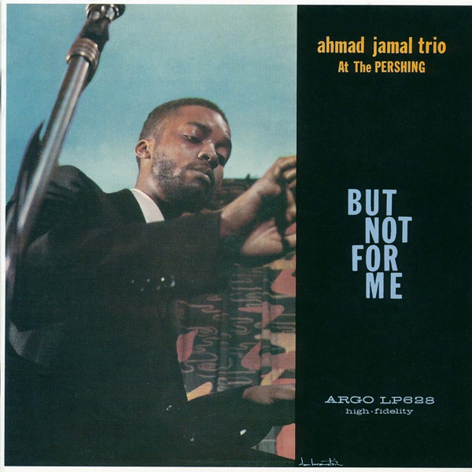
Ahmad Jamal At The Pershing Ahmad Jamal Trio
1958
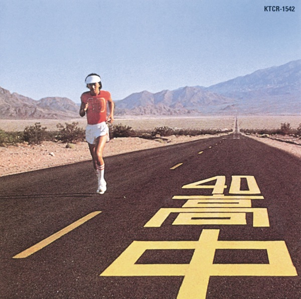
AN INSATIABLE HIGH Masayoshi Takanaka
1977
Coltrane's Sound John Coltrane
1964, rec. 1960
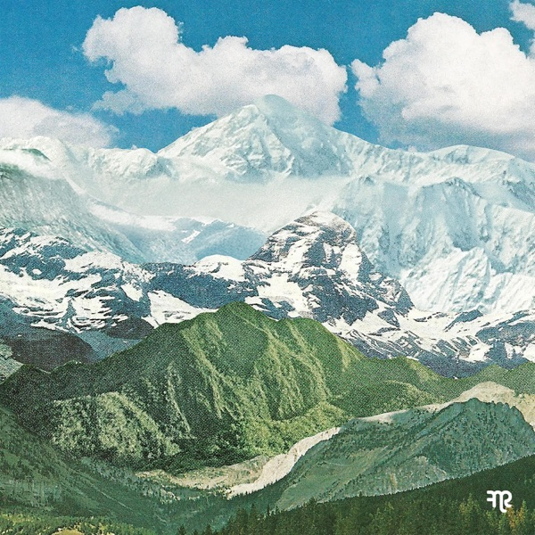
Days As Echoes Misha Panfilov
~2021
Explorations Bill Evans Trio
1961
Getz/Gilberto Stan Getz & João Gilberto
1964
I Remember Charlie Parker Joe Pass
1979
Jazz Impressions Of Black Orpheus Vince Guaraldi Trio
1962
Kind Of Blue Miles Davis
1959
La Rana Agustín Pereyra Lucena
~1974
NOT TiGHT DOMi & JD BECK
2022
Solo Guitar Ted Greene
1977
The Incredible Jazz Guitar of Wes Montgomery Wes Montgomery
1960
The Köln Concert Keith Jarrett
1975
Vince & Bola Vince Guaraldi/Bola Sete
~1960s, Fantasy Records
Visions Grant Green
1971
Whisper Not Keith Jarrett Trio
2000, rec. 1999
WHO ASKED? DOMi & JD BECK
2024
キャット Hiroshi Suzuki
1975
Live & jam 12 A Live One Phish
1995
Amsterdam Phish
2013, rec. 1997
Cornell 5/8/77 Grateful Dead
rec. 1977, released 2017
Dick's Picks Vol. 12: Providence Grateful Dead
1998, archival
Dick's Picks Vol. 18: Dane County Grateful Dead
2000, rec. 1969
Dozin' at the Knick Grateful Dead
1996, rec. 1990
Farmhouse Phish
2000
Junta Phish
1989
Live Phish: 8/6/10 Greek Theatre Phish
2010
LivePhish 04/03/98 & 04/05/98 Artwork not yet located LivePhish 04/03/98 & 04/05/98 Phish
1998
Veneta, OR 8/27/72 Grateful Dead
rec. 1972, released 2013
Without a Net (Live) Grateful Dead
1990
Reggae 1 Kaya Bob Marley & The Wailers
1978
Rock & alternative 25 A Ghost Is Born Wilco
2004
A Moon Shaped Pool Radiohead
2016
A Rush of Blood to the Head Coldplay
2002
Abbey Road The Beatles
1969
Ants From Up There Black Country, New Road
2022
Astral Weeks Van Morrison
1968
Axis: Bold As Love Jimi Hendrix
1967
Currents Tame Impala
2015
Eat A Peach Allman Brothers Band
1972
Hatful of Hollow The Smiths
1984
In Rainbows Radiohead
2007
In The Court Of The Crimson King King Crimson
1969
Meat Is Murder The Smiths
1985
Moondance Van Morrison
1970
Painting of a Panic Attack Frightened Rabbit
2016
Parachutes Coldplay
2000
Quarters! King Gizzard & The Lizard Wizard
2015
Remain in Light Talking Heads
1980
Rumours Fleetwood Mac
1977
Sketches of Brunswick East King Gizzard & The Lizard Wizard
2017
Sky Blue Sky Wilco
2007
The Bends Radiohead
1995
The Dark Side of the Moon Pink Floyd
1973
Wish You Were Here Pink Floyd
1975
Yankee Hotel Foxtrot Wilco
2002
Soul, funk & R&B 8 Another Side Of Skinshape Skinshape
2016
Black Velvet O'Donel Levy
1975
Breeding of Mind O'Donel Levy
1973
Texas Sun Khruangbin & Leon Bridges
2020
The Best of Sade Sade
compilation, 1994
The Exciting Sounds of Menahan Street Band Menahan Street Band
~2008
Troupeau bleu Cortex
1975
What's Going On Marvin Gaye
1971
Soundtracks 3 Almost Famous Various Artists
2000
Garden State Various Artists
2004
Rushmore Various Artists
1999